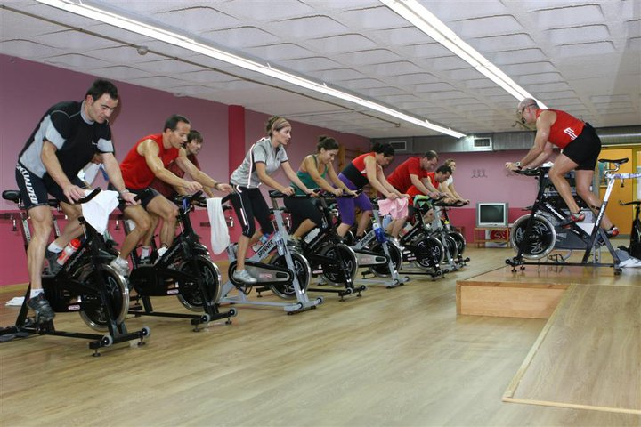
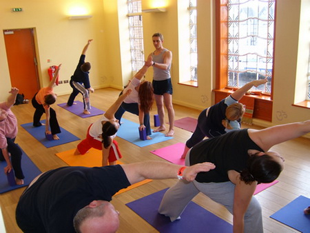
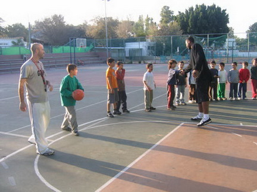

חוגים בקאנרטי בית יצחק
הקאנטרי מציע לחבריו תוכנית חוגים מגוונת ביותר.
תוכנית החוגים כוללת חוגי ילדים וחוגי מבוגרים, חוגי בוקר וחוגי ערב וזאת 7 ימים בשבוע.
בתוכנית החוגים מבחר עצום של חוגי ספורט ותנועה, חוגי מחול וחוגי אומנויות לחימה.
החוגים מתקיימים באולמות מרווחים, ממוזגים ומאובזרים בציוד החדיש ביותר.


מועדון הכדורמים
מועדון הכדורמים הפועל בבית יצחק נוסד בסוף שנות השישים של המאה הקודמת. מייסדי הקבוצה היו יצחק פיטרברג וקורט אליאס, שחברו יחדיו לניהול ואימון הקבוצה. פעילות המועדון ערכה מספר שנים עד לאמצע שנות השבעים. בשנים אלו השתתף המועדון בליגות הנוער לגילאים השונים. הקבוצה הגיעה להישגים יפים ביניהם העפלה לגמר גביע המדינה והיוותה גורם משמעותי בליגות הנוער.
הפסקת פעילות המועדון נבעה מכך שמרבית השחקנים התגייסו לצה"ל.
בחודש דצמבר 2004 פנתה ועדת הספורט של בית יצחק עם מספר שחקני עבר לאמיר ויינברג, שוער נבחרת ישראל בעבר, בניסיון להחזיר את המועדון לפעילות. ואכן בתחילת שנת 2005 החל מועדון הכדורמים לפעול בשנית, לאחר הפסקה של 40 שנים.
בחודשים הראשונים התאמנו כחמישה עשר נערים והתמקדו בלימוד בסיס הכדורמים. בקיץ 2005 הצטרפו נערים נוספים והקבוצה החלה בפעילות אינטנסיבית. בעונת המשחקים 2005-2006 החל המועדון לקחת חלק בליגות הנוער.
בכל עונה התוצאות השתפרו והקבוצות השונות התקדמו בדירוג כאשר כבר בעונת 2007-2008 לאחר 3 שנים בלבד של פעילות, עלתה קבוצת גיל 16 לגמר גביע המדינה.
בעונת 2008-2009 החלה פעילות קבוצת הבוגרים. הקבוצה נוטלת חלק בליגה הלאומית זו העונה השלישית.
עד לסיום עונת 2009-2010 ולאחר 5 שנים של פעילות בליגות השונות, הגיע המועדון שלוש פעמים לגמר גביע המדינה ושלוש פעמים לגמר הליגה ולהתמודדות על אליפות המדינה.
כיום, מחלקת הנוער היא אחת מהבולטות בארץ ומייצרת ספורטאים המשתייכים לנבחרת ישראל.
ספינינג
ספינינג הוא תחום אימון גופני אירובי בו רוכבים על אופני כושר באולם. האימון מתבצע באופן אישי ע"י מדריך או עם קבוצה גדולה שמגיעה ל-30 ואף יותר רוכבים בחדר הכושר.השיטה פותחה בשביל רוכבי אופניים שאינם יכולים להתאמן בחורף אבל חייבים לשמור על כושר רכיבה גבוהה.שיעורי ספינינג הם המילה האחרונה בתחום הכושר בארץ. מעבר לכושר ולשריפת השומנים, האווירה בשיעור היא שמחה וקופצנית, המוזיקה קצבית ורועשת, ואחרי שיעור אחד כבר תרגישו שזהו תחום קשה אך עם תוצאות מובטחות.
מטרת אימון הספינינג:המטרה העיקרית של ספינינג היא שריפת קלוריות, כל אימון אפשר להגיע לשריפה של 500-1000 הכל תלוי בכמה אתם בכושר.מעבר להרזיה ספינינג היא פעילות אירובית בה הלב מגיע לדופק מאוד גבוהה וכך אנו משפרים סיבולת לב ריאה.אחרי 50 דקות של רכיבה אתם תרגישו את שרירי הרגליים - הפעולה גורמת לחיטוב הגוף ולחיזוק השריר.
זומבה

זומבה הוא אימון פיטנס אנרגטי ותוסס, אשר מאפשר פעילות גופנית ושריפת קלוריות , תוך מסווה שמאפשר לנו לא להרגיש כלל שאנו מתאמנים – המסווה הזה הוא כמובן ריקוד.
הזומבה הינו הפיטנס הלטיני. השיעורים משלבים את מגוון המקצבים הלטיניים : קומביה , רגאטון , סלסה , צ'ה צ'ה צ'ה , מרנגה ועוד, מעלים את האדרנלין ואת האנרגיות וסוחפים אותנו למקום נפלא בו הקלוריות פשוט נעלמות.
מטרת הזומבה היא לאפשר לכל אדם להתנסות ולהצטרף למסיבה, אין כל צורך בניסיון קודם בריקוד, הריקודים הם פשוטים וקלים לתפיסה, על מנת לאפשר לכל אחד ואחד להצטרף וליהנות!
יוגה
יוגה היא פילוסופיה רוחנית ואימון גופני-רוחני שמקורם בחכמה ההינדית.
היוגה היא מסע פיזי מנטאלי ורוחני שמטרתו להרגיע את תנודות התודעה, ודרכו המתרגל מקבל כלים להתמודד עם הקשיים האישיים שלו, פיזיים או נפשיים.
היוגה הקלאסית מונה כשמונה איברים או שלבים של היוגה במסע לחקר הנשמה: 1. יאמה- דיברות המוסר האוניברסליות. 2. ניאמה- היטהרות עצמית על ידי משמעת. 3. אסאנה- תנוחה. 4. פראניימה- שליטה בקצב הנשימה. 5. פרטיהרה- כינוס עצמי וניתוק המחשבה מגורמים חיצוניים. 6. דהאראנה- ריכוז. 7. דהיאנה- מדיטציה. 8. סאמאדהי- מצב של מודעות הנוצר על ידי מדיטציה.
פילאטיס

פילאטיס היא שיטת התעמלות שפותחה על ידי ג'וזף פילאטיס בשלהי המאה ה-20. שיטה זו מאזנת את כל הגוף תוך התמקדות במתיחות, בחיזוק, וביישור וייצוב עמוד השדרה. על ידי שימוש בעקרונות כמו נשימה, שליטה וזרימה, עוזרים תרגילי פילאטיס לשפר את היציבה ואת השליטה בשרירים, כך שהתנועה הופכת ליעילה יותר.
שרירים מרכזיים הם המוקד העיקרי באימון פילאטיס ומוקדשת תשומת לב מיוחדת למכאניקה תקינה ולדיוק בתנועות. בנוסף, מושם דגש על החיבור בין גוף לנפש כך שהעבודה מתמקדת באיכות התנועה ולא בכמות.
באימון פילאטיס משתמשים בגלגיליות ובקפיצים שמספקים התנגדות או סיוע לתנועה, תלוי בפעילות הגופנית שמתבצעת. על ידי מניפולציה על הציוד, יכולה הפעילות הגופנית להתבצע ברמות מאמץ שונות, כמו כן ניתן לשנות לחלוטין את השריר בתנועה שבו מתמקדים ובכך לספק אפשרויות רבות הן לפעילות גופנית והן להתפתחות ולשינוי.
טניס

אימונים וחוגים בניהולה של טל גרין 054-7222418
אימונים וחוגים:
- חוג טניס לילדים מתחילים ומתקדמים
- טרום טניס טניס לגיל הרך מגיל 4.5
- חוגי טניס ואימונים אישיים למבוגרים
ימי פעילות:
שני ורביעי משעה 18:00 עד 22:00
קבוצות נוספות תפתחנה בהתאם לביקוש.
כדורגל

החוג מתאים לשחקנים מתחילים ומתקדמים כאחד.המטרה העיקרית של החוג היא פיתוח יכולת חברתית, ולהיות חלק מקבוצת כדורגל מקצועית.
במסגרת החוג נבצע תריגילים בסיסיים של שליטה על כדור, מסירה, יכולת תנועה עם כדור, לימוד תנועה ומשחק קבוצתי.
ייחודו של החוג מתבטא בגישה חברתית המאפשרת ללמוד להשתלב בפעילות קבוצתית, גם לבעלי יכולות פיזיות סבירות או לחילופין "בעיות חברתיות" הידועות להורים עוד לפני הגעת הילד לחוג.החוג עצמו הוא יותר אירוע או מפגש של ילדים האוהבים את אותו ענף ספורט אך אינם מונעים על ידי הוריהם להצליח או להיות טובים יותר, אלא להנות ולרכוש חברים, לדעת איך להתנהג במצבים חדשים וגם ללמוד כדורגל.
כדורסל
חוג הכדורסל מיועד לבנים ובנות בגילאים 7-15
חוג הכדורסל בשל היותו בראש ובראשונה משחק חברתי מקנה לכם מיומנויות בינאישיות חדשות (או מחדד קיימות), כיכולת הנהגה, עבודת צוות ושיתוף פעולה, בניית חזון אסטרטגי וגזירת תוכנית פעולה ליישומו, ראייה עתידית וראייה מערכתית. בהיבט האישי משחק כדורסל מפחח אצלכם את הביטחון העצמי ויכולת העמידה באתגרים, מלמד אתכם תחרותיות בריאה מהי והתמודדות נכונה עם הפסדים.
חוג כדורסל הינו חוג בו נוצר שיפור בזריזות ידיים ורגליים, במהירות ובקואורדינציה, הכוח הפיזי גדל, שרירי הגוף מתארכים ומתייעלים, מערכת השלד מתחזקת, הכושר הגופני וסיבולת הלב ריאה משתפרים אף הם.
חוג כדורסל מועבר על ידי מדריכים מיומנים אשר מלמדים אתכם את יסודות המשחק תוך הנאה וכייף.
חוג כדורסל הוא חוג ייחודי בעל יתרונות פיזיים ומנטאליים, אישיים ובין אישיים מובהקים אשר מקנה ערכים ספורטיביים וחברתיים ותורם לבריאות הנפשית ולאיכות חיים גבוהה במיוחד.